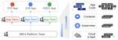
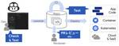
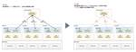

JCB Tech Blog
https://tech.jcblab.jp/
JCB Tech Blog
フィード
SMキャリアチェンジ活動
JCB Tech Blog
本稿はJCB Advent Calendar 2024の12月10日の記事です。 JCBデジタルソリューション開発部の長谷川と髙木です。 アプリチームではJCBが提供する様々なサービスの開発・運用をしています。 プロダクトごとにチームを分けており、我々はそれぞれ別チームで異なるプロダクトを担当をしています。 各チームごとに開発プロセスとしてスクラム開発を採用しており、長谷川・高木ともにDEV（開発者）として開発に関わっています。 今回はDEVからSM（スクラムマスター）へキャリアチェンジするにあたり、活動した内容を紹介します。 SMキャリアチェンジのきっかけ 下記はプロジェクト内の人数に対して…
1日前

金融事業会社におけるGitHub Copilot導入の道のり（下巻/効果編）
JCB Tech Blog
本稿はJCB Advent Calendar 2024の１２月７日の記事です。 アーキテクトチームの長沼です。 JDEPでは、開発にGitHub Copilot Business（以下、特段の記載ない場合は「Copilot」と省略）を導入しています。 この導入の取組について、2024年11月6日に行われた Microsoft Developer Dayで、「金融事業会社におけるGitHub Copilot導入の道のり - JCBのPoC〜活用」と題して登壇させていただきました。 発表内容は次の３部構成となっており、当日は時間の関係で十分に説明できなかった部分も含めて、それぞれ記事で振り返ろうと…
3日前

金融事業会社における GitHub Copilot 導入の道のり（中巻/リスク編）
JCB Tech Blog
本稿はJCB Advent Calendar 2024の１２月５日の記事です。 アーキテクトチームの長沼です。 JDEPでは、開発にGitHub Copilot Business（以下、特段の記載ない場合は「Copilot」と省略）を導入しています。 この導入の取組について、2024年11月6日に行われた Microsoft Developer Dayで、「金融事業会社におけるGitHub Copilot導入の道のり - JCBのPoC〜活用」と題して登壇させていただきました。 発表内容は次の３部構成となっており、当日は時間の関係で十分に説明できなかった部分も含めて、それぞれ記事で振り返ろうと…
5日前

exportToでIstioの負荷を減らそう 1
1
JCB Tech Blog
本稿はJCB Advent Calendar 2024の12月4日の記事です。 SREチームの鳩貝です。 JDEPでは、マイクロサービス間の通信制御にGoogle CloudのマネージドIstioであるCloud Service Mesh (CSM)を採用しています。JDEPの規模拡大に伴い、アプリリリース時にJDEP基盤全体のCPU使用量がスパイクする事象が発生しました。本挙動はIstioのxDS APIの仕様が原因であり、サービスメッシュ全体の規模が大きくなるにつれて顕著になっていました。 上記に対処するため、IstioのexportTo設定を活用することで負荷軽減と安定化を図りました。本…
6日前
GKE とうとうリリースチャンネルに載せました
JCB Tech Blog
本稿はJCB Advent Calendar 2024の１２月３日の記事です。 PFチームの平松です。 去年の記事では、Google Kubernetes Engine (以下GKE) のアップグレード運用効率化について記載しました。 今回は、前回の記事で記載したGKEクラスタのアップグレード戦略からの変更点について、その背景と詳細について記します。 前提条件 GKEのアップグレード運用を行うにあたり、前提となる当初設定は以下の通りでした。 本条件を念頭に置いてアップグレード戦略の更新に至るまでを記載します。 GKEのマイナーアップグレードは任意のタイミングで実施 アップグレード戦略として、チ…
7日前

金融事業会社におけるGitHub Copilot導入の道のり（上巻/背景）
JCB Tech Blog
本稿はJCB Advent Calendar 2024の１２月２日の記事です。 アーキテクトチームの長沼です。 JDEPでは、開発にGitHub Copilot Business（以下、特段の記載ない場合は「Copilot」と省略）を導入しています。 この導入の取組について、2024年11月6日に行われた Microsoft Developer Dayで、「金融事業会社におけるGitHub Copilot導入の道のり - JCBのPoC〜活用」と題して登壇させていただきました。 登壇の様子 発表内容は次の３部構成となっており、当日は時間の関係で十分に説明できなかった部分も含めて、それぞれ記事で…
8日前
JCB Embedded SREチームの2024年上期の取り組みを振り返る
JCB Tech Blog
はじめに デジタルソリューション開発部 SRE チームの小柳津です。 以前の記事で、JCB Digital Enablement Platform (JDEP) SREチームで取り組んでいる、SREエンゲージメントモデルの1つ「Embedded SRE」についてご紹介しました。（記事はこちらから！） 2024年度も半分を過ぎたということで、今回はここまでのEmbedded SREの活動実績および、取り組みを振り返りたいと思います。 ✏️ Embedded SREとは？ 先日の記事でもEmbedded SREの取り組みについてご紹介しましたが、ここで簡単におさらいをします。 （JDEPへの導入背…
2ヶ月前
Adobe XDからFigmaへデザインデータを移行した話
JCB Tech Blog
こんにちは、デザインチームのスジンです。 今回は、Adobe XDからFigmaへのデザインデータ移行の経験について、お話ししたいと思います。 私は昨年、JCBにUI/UXデザイナーとして入社しました。 当時、社内では主にAdobe XDを使ってデザインをしていましたが、並行して進行していたデザインシステムのプロジェクトではFigmaが使われていました。 そこで、引き継いだプロジェクトにおいてもデザインシステムのようにFigmaを活用できる方が良いと考え、Adobe XDからFigmaへの移行を提案しました。 Figmaにはデザイナーだけでなく、エンジニアの作業効率を大幅に向上させる多くの機能…
3ヶ月前
今年もCloud Operator Days Tokyo 2024 で講演しました！
JCB Tech Blog
JCBデジタルソリューション開発部 PFチームの平松です。 2024/7/16より配信開始されている「Cloud Operator Days Tokyo 2024」にて取り組みの紹介をいたしました。 https://cloudopsdays.com/ 本年度は、運用者に光を！ 〜AIの未来、運用者の現実〜 というテーマにて数多くのセッションが公開中となっております。 去年に引き続き、今年もセッションスピーカーに選ばれました。 今回の私のセッションは「運用自動化（Dev/Ops、CI/CD、IaC）」のカテゴリにて、「二桁を超えるクレジット関連サービスが稼働中のGKEにおいて、年数回のアップグレ…
5ヶ月前
生成AI活用への取組 - GitHub Copilot の利用者推移を可視化してみた
JCB Tech Blog
はじめに アーキテクトチームの長沼です。 JDEPでは、アプリケーションの開発にAIペアプログラマーGitHub Copilot Business（以下、GCB）を取り入れています。 GCBは開発者にとって非常に便利な支援ツールであり、積極的に活用していきたいと考えています。 一方で、企業として利用する以上、費用対効果の説明やリソースの効率的な利用も時に求められます。 そこでJDEPでは、GCBの利用状況の可視化にも取り組んでいます。 今回はその1つとして、Copilot利用者数を可視化する取り組みについてご紹介します。 アーキテクチャ GCBでは、GitHub Copilot User Ma…
7ヶ月前
「組み合わせテスト」ついてやさしく解説します！
JCB Tech Blog
はじめに JCB デジタルソリューション開発部 QSATチームの星野です。 今回は、組み合わせテストとそのための有用な技法である同値分割や境界値分析の使い方についてやさしく解説します。 組み合わせテストとは 名前の通り、あるものの「組み合わせ」により発生するバグがないかを確認するテストです。では、具体的に何を組み合わせればよいでしょうか。 組み合わせるものは、テストしたい対象の項目が持っている具体的な「値」です。 言葉だけではイメージしづらいので、以下のカラーを選択できるプルダウンの図にて説明します。 この場合、テストしたい対象の項目はカラー。 具体的な値は、プルダウンの選択肢にある赤色または…
7ヶ月前
生成AI活用への取組〜AIペアプログラマー（GitHub Copilot） PoC実践編
JCB Tech Blog
はじめに アーキテクトチームの長沼です。 先日は生成AI活用への取組の第一弾としてPoC準備についてご紹介しました。 今回は実際にPoCを行ってみた結果についてご紹介したいと思います。 PoCで使用するツールは、開発における生成AIの草分け的存在でもあるGitHub Copilot、そのビジネス向け製品であるGitHub Copilot Business を採用して実施しました。 PoC対象の概要 JDEPでは特性の異なる様々なアプリケーション（以下APL）を開発運用しています。 今回のPoCでは、その中から以下のAPLを開発するチームに協力をお願いしました。 アプリ名 開発言語 概要 開発フ…
8ヶ月前
SREチームにEmbedded SREモデルを導入しました
JCB Tech Blog
はじめに DXテックG SRE チームの小柳津です。 SREチームは2023年度から、SREエンゲージメントモデルのひとつである「Embedded SRE」の取り組みを本格化しています。 今回は Embedded SRE の取り組みについて知ってもらうことを目的とし、活動の概要や方針、実際に Embedded としてAPLチームに参画してみての振り返りをしたいと思います。 Embedded SREとは？ 直訳すると「組み込みSRE」。すなわちSREのメンバーが JCB Digital Enablement Platform (JDEP) 上で稼働しているAPLチームのDevとして参画します。 …
8ヶ月前
3DセキュアにおけるDSの開発
JCB Tech Blog
JCB デジタルソリューション開発部 DXテックグループの村井です。 アプリチームではJCBが提供する様々なサービスの開発・運用をしています。 今回は非対面のクレジットカード決済で導入が進んでいる3Dセキュア（本人認証サービス）について、 その概要と3Dセキュアを構成するDSシステムの開発についてざっくりと紹介します。 3Dセキュアって何？ 3Dセキュアは、インターネットショッピング（非対面決済）でのクレジットカード決済における、本人認証（不正対策）サービスの仕様でありフレームワークです。 クレジットカードでネットショッピングを利用する際は通常、クレジットカードの「カード番号」「有効期限」「セ…
10ヶ月前
GKEのアップグレード運用の効率化
JCB Tech Blog
本稿はJCB Advent Calendar 2023の１２月２５日の記事です。 PFチームの平松です。 我々の部門で運営しているJDEPの最重要構成要素である、Google Kubernetes Engine (GKE) のアップグレードに関する取り組みを紹介したいと思います。 アップグレードサイクル GKEの元となるOSSは知っての通りKubernetesですが、こちらのアップグレードサイクルはご存知でしょうか。 公式サイトに記載の通り、Kubernetesは4ヶ月ごとにマイナーバージョンがアップグレードされています。 Google CloudによるマネージドKubernetesであるGK…
1年前
DevSecOpsは必要だと改めて思った話
JCB Tech Blog
本稿はJCB Advent Calendar 2023の12月24日の記事です。 はじめに セキュリティチームの長沼です。 DevSecOpsという技術ワードがあります。 開発〜運用を一体に行うDevOps全般にわたりセキュリティを考慮し、より開発前工程で気づくことにより手戻りを減らすこと(Shift Left)を目的とするものです。 アジャイルで開発していく上で、その必要性を改めて強く感じることがありましたので、ご紹介したいと思います。 JDEP初期のアプリ開発の流れ この話をする上で、まず初期のJDEPにおけるアプリ開発の流れについて説明させてください。 JDEPではアジャイル・スクラム開…
1年前
テスト技法「境界値分析」をやさしく解説します！
JCB Tech Blog
本稿はJCB Advent Calendar 2023の１２月２１日の記事です。 JCBデジタルソリューション開発部 QAチーム（QSAT）の佐藤です。 前回は同値分割法について解説しました。 今回はテスト技法の「境界値分析」についてやさしく解説したいと思います。 境目に注目する 境界値分析という文字列を見ると難しく感じるかもしれませんが要は「境目に注意する」ということです。 このテスト技法が基本的なものとして扱われているのは、境界値周りでプログラムのミスが発生しやすいからです。みなさんも、普段使っている「以上」「以下」「未満」など境界値を示す表現で誤解や間違いに遭遇したことがあるのではないで…
1年前
生成AI活用への取組〜AIコードジェネレータ PoC準備編
JCB Tech Blog
本稿はJCB Advent Calendar 2023の12月20日の記事です。 はじめに アーキテクトチームの長沼です。 2023年は生成AI（Generative AI…以下、GenAI）が大きく注目を集めた年でした。 JDEPにおいても、開発現場におけるGenAI活用の取り組みを進めています。 GenAI技術の導入可否を決める上では、多くの場合、PoC（Proof of Concept）またはPoV（Proof of Value）を行います（以降では一律PoCと記載します）。 このとき、どういった観点・項目で情報を収集し評価すればよいか悩む方も多いと思います。 今回は、JDEPでのGen…
1年前
スクラムイベントにジョインしてみて
JCB Tech Blog
本稿はJCB Advent Calendar 2023の１２月１９日の記事です。 はじめに DXテックG PFチームの島﨑です。 今年度の10月に入社してPFチームに配属してからスクラムで開発しています。 スクラムイベントにジョインしてみてということで自分のチームでのスクラム開発の内容と入ってみてから感じたことを記載していこうと思います。 PFチームのスクラム開発 現在の構成としては以下のようになっています。 PO：1名 SM：1名（1名） dev：7名 PFチームでは自分が配属されてからは木曜がイベント日の1週間スプリントで開発しています。 元々2週間スプリントだった時の名残でスプリントレビ…
1年前
Four Keysを使ってチームのパフォーマンスの可視化をしてみた話
JCB Tech Blog
本稿は JCB Advent Calendar 2023 の12月18日の記事です。 はじめに DXテックG SRE チームの小柳津です。 SRE チームは JCB Digital Enablement Platform (JDEP) 上で稼働しているアプリケーションチームに対し「より生産性の高い、ハイパフォーマンスなチームを目指す」ための支援を実施しています。 そこで SRE チームではチームのパフォーマンスを評価する Four Keys と呼ばれる指標を取得するよう取り組みましたのでご紹介します。 Four Keys とは DevOps Research and Assesment (DO…
1年前
利害関係者を可視化する「ステークホルダーマップ」を作ってみた
JCB Tech Blog
本稿はJCB Advent Calendar 2023の12月14日の記事です。 はじめに DXテックG デザインチームの入尾野です。 今回は、プロジェクトの立ち上げ時に「ステークホルダーマップ」を作成してみた事例と得られた効果についてご紹介したいと思います。 ステークホルダーマップとは ステークホルダーマップとは、サービスやプロジェクトを取り巻く人や組織とその関係性を図式化したものです。プロジェクトに関わる全ての利害関係者を特定し、どのような関係をもって結びついているのか、全体を俯瞰して把握できます。 ステークホルダーマップを作成する目的 プロジェクトの成功に不可欠なのは、関係者が協力し合う…
1年前
データベースの排他制御を実践してみた【NestJS+TypeORM】
JCB Tech Blog
本稿はJCB Advent Calendar 2023の１２月１３日の記事です。 はじめに DXテックG アプリチームの渡辺です。 本記事では、アプリ開発において排他制御を実装した際に学んだことについてまとめたいと思います。 読んでくれた方の参考に少しでもなれば幸いです。 排他制御とは 共有しているデータへの同時更新で不整合が生じることを防ぐため、あるトランザクションが共有データを更新している時は他トランザクションからは更新できないように制御することです。 排他制御の方法には、大きく分けて楽観的排他制御と悲観的排他制御（以降、楽観排他と悲観排他で表記）の2種類があります。 楽観排他 楽観排他と…
1年前
スクラム開発のストーリーポイントを時間見積りにしない理由
JCB Tech Blog
本稿はJCB Advent Calendar 2023の12月11日の記事です。 JCBデジタルソリューション開発部 DXテックG JCB Linkチームの岩本です。 本日はスクラム開発におけるSP（ストーリーポイント）の見積りについて解説します。 まずはSPについての知識のおさらいです。 スクラム開発の見積りにはSPを用いる ご存知の方も多いと思いますがおさらいです。 SPには下記の特徴があります。 基準となるプロダクトのSPを定め「相対評価」で見積る Sprintごとの消化SPが予測できる（理想ベロシティ） バックログ全体のSP÷理想ベロシティ＝開発完了時期 の予測ができる 「相対評価」で…
1年前
Google Apps Scriptでポモドーロ用のツールを実装した話
JCB Tech Blog
本稿はJCB Advent Calendar 2023の12月8日の記事です。 はじめに DXテックG Platformチームの四方と申します。 本記事では、Google Apps Script(以下、GAS) でアプリを自作した際の学びについて記載していきます。 ※ 記事内に記載するコードはTypescript を用いて実装しておりますが、記載の都合上、一部の型定義やエラーハンドリングは省略させていただいております。 背景 所属するチームにてポモドーロテクニックという時間管理術を用いて作業タスクの効率化を図る機会がありました。 その際に時間管理をGASの自動処理に一任し、ChatOpsに組み…
1年前
やってみようコンテナ間通信制御 with Istio
JCB Tech Blog
本稿はJCB Advent Calendar 2023の12月5日の記事です。 DXテックG SREチームの鳩貝です。 本日は弊社基盤で活用中のOSSのサービスメッシュプラットフォームであるIstio(※)について、簡単な検証を交えつつ紹介します。 なお、本稿はKubernetesに関する基本的な知識（Deployment、Service等）を保持していることを前提としています。あらかじめご承知おきください。 ※正確には平松の記事の通り、弊社基盤"JDEP"ではGoogle CloudマネージドIstioであるAnthos Service Mesh(ASM)を利用しています。よって以下本稿記載…
1年前
PlatformでSLO運用はじめました。- Platform Engineerring初めの一歩 -
JCB Tech Blog
本稿はJCB Advent Calendar 2023の１２月１日の記事です。 PFチームの平松です。 本ブログを執筆するメンバーはJCB Digital Enablement Platform (JDEP)と名付けたプラットフォーム上に、マルチテナント方式で各種アプリをデプロイして運用しています。 前身のビジネス構築の高速化プロジェクトが発足して以来構築を進めたJDEPですが、2023年12月現在2桁を超えるアプリケーションの開発・運用が行われており、 我々PFチームも拡大する組織に合わせてAPLチームが動きやすい環境構築に携わってきました。 各アプリケーションはそれぞれ独自にCritica…
1年前
ユーザーインタビューの後どうする？ 発話録からインサイトを探る「KA法」を試してみた
JCB Tech Blog
はじめに JCB デジタルソリューション開発部 デザインチームの入尾野です。 デザインチームは、アプリチームのUX/UIデザイン面について横断的に支援することを目的に、2022年7月より立ち上げたチームです。 インタビューした後、どうしてますか？ 突然ですが、開発や企画を推進する際、ヒアリングやインタビューを実施されたことはありますか？ インタビューをしてみたものの、得られたデータをどのように分析したらよいのかと悩んだ経験のある方もいらっしゃるかもしれません。 デザインチームでは、明文化されていなかったデザインプロセスをガイドラインとして言語化する取り組みをしており、初案ができた段階でアプリチ…
1年前
テスト技法「同値分割法」をやさしく解説します！
JCB Tech Blog
JCBデジタルソリューション開発部 QAチーム（QSAT）の佐藤です。 本日は、ソフトウェアテスト技法の一つである同値分割法について、なるべく平易な言葉で解説したいと思います。 実は無意識で使っている？ 同値分割法は、テストの際に入力値等をグループ化して扱うことでテストの工数を削減するテスト技法です。 技法というと難しく感じるかもしれませんが、ソフトウェアのテストに関わる多くの人は無意識にやっていることだと思います。 例えば以下のような場合、みなさんはどのようにテストするでしょうか？ テスト対象のイメージは、Web画面で設問に回答していき、最後に点数を表示するアプリケーションです。 テスト用の…
1年前
ギリギリまで見せちゃいます！JCBのスクラムイベント！
JCB Tech Blog
JCB デジタルソリューション開発部 アプリチームの森口です。 アプリチームに所属しており、担当するサービスの開発・運用保守を行っています。 私の担当するプロジェクトではスクラムで開発をしています。 認定スクラムデベロッパー（CSD）研修を受けて、他社がどういうスクラムを実践しているのか個人的に気になったので、まずは、自チームのスプリント中の過ごし方を記事にしてみました。 はじめに 担当するプロジェクトでのスプリント期間は2週間になります。 2週間スプリントの流れ スクラムイベントは水曜日にまとめて実施しており、スクラムイベント以外の時間は開発に注力しています。 イベントにはそれぞれタイムボッ…
1年前